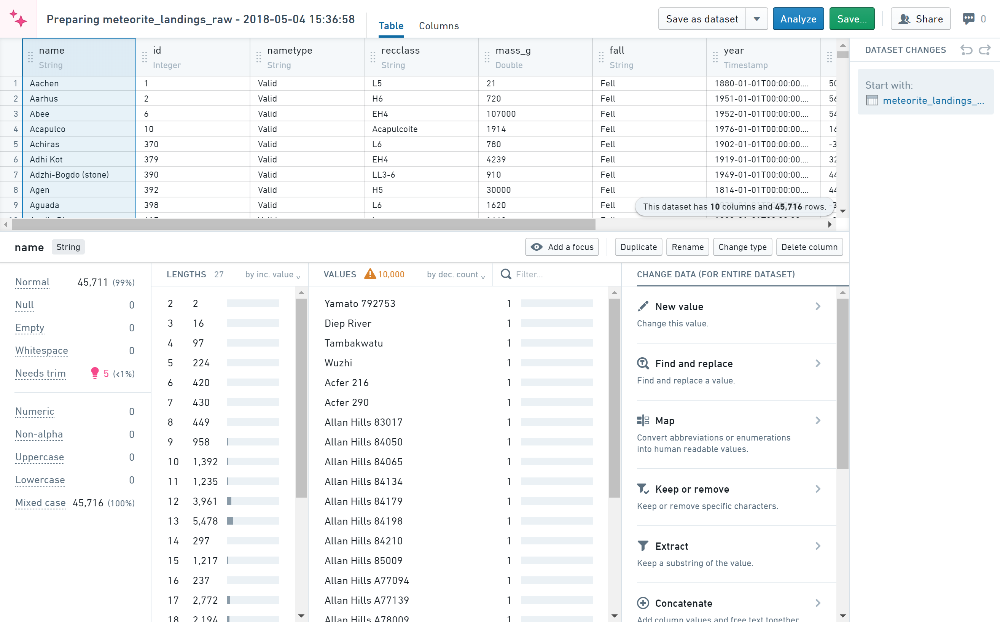

:::callout{theme="warning" title="Sunset"} Preparation is in the sunset phase of development and will be deprecated at a future date. Full support remains available. We recommend migrating your workflows to Pipeline Builder for cleaning and preparing data and to take advantage of Marketplace support. :::
Preparation is an interactive tool for cleaning and preparing data. Cleaning refers to fixing data quality issues, and preparing refers to manipulating data to make it usable for a specific analytic task.
The dataset shown below comes from The Meteoritical Society via the NASA Data Portal â.

The following terms are useful to know before using the Preparation tool:
Preparation: A cleaning/preparation session
Clean: Fix data quality issues in a dataset
Prepare: Adapt a dataset for a specific use
Change: An individual clean/prepare step
Changelog: All the changes made within a preparation